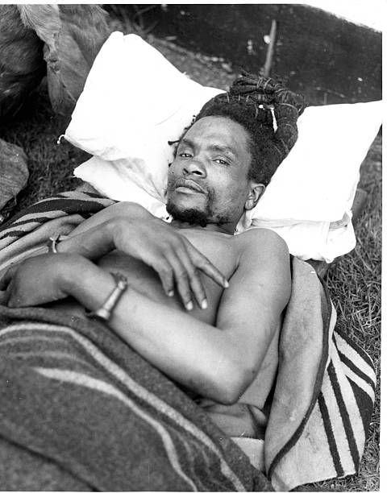

Dedan Kimathi
The Kenyan Freedom Fighter

A picture of Dedan Kimathi
Dedan Kimathi was a key figure in the Mau Mau uprising against British colonial rule in Kenya. Here is a summary of his life and accomplishments in chronological order:
- 1920s: Dedan Kimathi is born in Nyeri, Kenya, during the British colonial era.
- 1950: Mau Mau rebellion begins in response to British oppression and land dispossession of the Kikuyu people.
- 1952: Kimathi becomes a leader in the Mau Mau movement, organizing resistance against the British colonial authorities.
- 1956: Kimathi's leadership becomes prominent as he takes charge of the military wing of the Mau Mau, leading guerrilla warfare against British forces.
- 1957: British colonial forces capture Kimathi, marking a significant blow to the Mau Mau movement.
- 1958: Kimathi is tried in a controversial trial, found guilty of leading the Mau Mau uprising, and sentenced to death.
- 1957-1959: Despite international appeals for clemency, Kimathi is executed by hanging in February 1957. His execution sparks protests and becomes a symbol of resistance against colonial oppression.
Posthumous Recognition: Dedan Kimathi is remembered as a national hero in Kenya, with various monuments and institutions named in his honor. His legacy is celebrated for his role in the struggle for independence and the fight against colonialism.
<<<©kelvin Njeru >>>